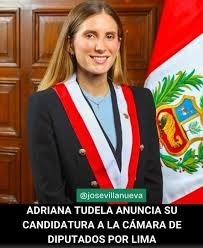
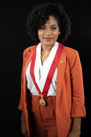
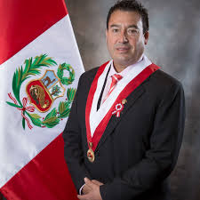

- 1. ALEJANDRO ENRIQUE CAVERO ALVA
- 2. ADRIANA MARCELA TUDELA GUTIÉRREZ
- 3. DIANA GONZALES DELGADO
- 4. JOSÉ LUIS GIL BECERRA
- 5. FERNANDO GIOVANNI URBINA LARA
- 6. VERÓNICA ESCOBAL ORDOÑEZ
- 7. LUIS ALBERTO ARRIOLA TUEROS
- 8. JOSÉ MANUEL ELICE NAVARRO
- 9. PATRICIA ROSA JUÁREZ GALLEGOS
- 10. CARLO MAGNO SALCEDO CUADROS
- 11. MARÍA DEL CARMEN ALVA PRIETO
- 12. ROSSANGELA BARBARÁN REYES
- 13. EDWIN MARTÍNEZ TALAVERA
- 14. HILDA PORTERO LÓPEZ
- 15. SILVIA MONTEZA FACHIN
- 16. KAROL PAREDES FONSECA
- 17. WILSON SOTO PALACIOS
- 18. ELVA EDITH JULÓN IRIGOÍN
- 19. SEGUNDO QUIROZ BARBOZA
- 20. KELLY PORTALATINO ÁVALOS
- 21. AMÉRICO GONZA CASTILLO
- 22. MARÍA AGÜERO GUTIÉRREZ
- 23. FLAVIO CRUZ MAMANI
- 24. WALDEMAR CERRÓN ROJAS
- 25. MARGOT PALACIOS HUAMÁN
- 26. ISAAC MITA ALANOCA
- 27. JANET RIVAS CHACÓN
- 28. MARÍA TAYPE CORONADO
- 29. SEGUNDO MONTALVO CUBAS
- 30. ABEL REYES CAM
- 31. GUIDO BELLIDO UGARTE
- 32. GUILLERMO BERMEJO ROJAS
| N° | Nombres | Partido | Foto | Profesión |
|---|---|---|---|---|
| 1 | ALEJANDRO ENRIQUE CAVERO ALVA | Avanza País | Economista | |
| 2 | ADRIANA MARCELA TUDELA GUTIÉRREZ | Avanza País |  | Abogada |
| 3 | DIANA GONZALES DELGADO | Avanza País |  | Administradora |
| 4 | JOSÉ LUIS GIL BECERRA | Avanza País |  | Ex PNP / Analista |
| 5 | FERNANDO GIOVANNI URBINA LARA | Avanza País | Abogado Constitucionalista | |
| 6 | VERÓNICA ESCOBAL ORDOÑEZ | Avanza País |  | Gestión Pública |
| 7 | LUIS ALBERTO ARRIOLA TUEROS | Avanza País | Administrador | |
| 8 | JOSÉ MANUEL ELICE NAVARRO | Avanza País | Abogado / Ex Ministro | |
| 9 | PATRICIA ROSA JUÁREZ GALLEGOS | Avanza País | Abogada | |
| 10 | CARLO MAGNO SALCEDO CUADROS | Avanza País | Abogado / Politólogo | |
| 11 | MARÍA DEL CARMEN ALVA PRIETO | Avanza País |  | Abogada |
| 12 | ROSSANGELA BARBARÁN REYES | Avanza País |  | Administradora |
| 13 | EDWIN MARTÍNEZ TALAVERA | Avanza País |  | Gestión Municipal |
| 14 | HILDA PORTERO LÓPEZ | Avanza País |  | Servicio Social |
| 15 | SILVIA MONTEZA FACHIN | Avanza País |  | Administradora |
| 16 | KAROL PAREDES FONSECA | Avanza País | Educadora | |
| 17 | WILSON SOTO PALACIOS | Avanza País | Abogado | |
| 18 | ELVA EDITH JULÓN IRIGOÍN | Avanza País |  | Administradora |
| 19 | SEGUNDO QUIROZ BARBOZA | Avanza País | Docente | |
| 20 | KELLY PORTALATINO ÁVALOS | Avanza País |  | Médico Cirujano |
| 21 | AMÉRICO GONZA CASTILLO | Avanza País | Abogado | |
| 22 | MARÍA AGÜERO GUTIÉRREZ | Avanza País | Empresaria | |
| 23 | FLAVIO CRUZ MAMANI | Avanza País |  | Abogado / Docente |
| 24 | WALDEMAR CERRÓN ROJAS | Avanza País |  | Doctor en Educación |
| 25 | MARGOT PALACIOS HUAMÁN | Avanza País |  | Relacionista Pública |
| 26 | ISAAC MITA ALANOCA | Avanza País | Abogado | |
| 27 | JANET RIVAS CHACÓN | Avanza País |  | Abogada |
| 28 | MARÍA TAYPE CORONADO | Avanza País |  | Abogada |
| 29 | SEGUNDO MONTALVO CUBAS | Avanza País |  | Técnico Jurídico |
| 30 | ABEL REYES CAM | Avanza País | Arquitecto | |
| 31 | GUIDO BELLIDO UGARTE | Avanza País | Ingeniero | |
| 32 | GUILLERMO BERMEJO ROJAS | Avanza País |  | Político |